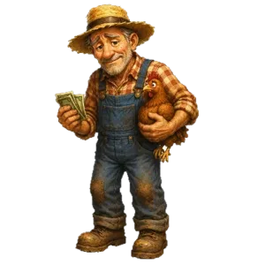
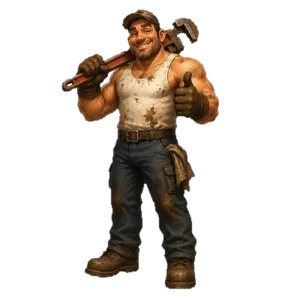
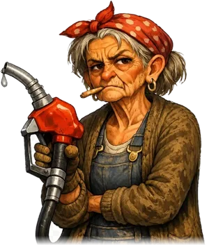
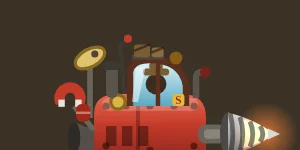

Was dich unten erwartet
📉 Lebendiger ErzmarktKohle, Silber, Gold und Edelsteine schwanken minütlich. Im Aufschwung verkaufen — oder einlagern und auf bessere Kurse zittern.
📜 Opas Geheimnis10 zerrissene Tagebuchseiten liegen im Dreck. Wer sie ausgräbt, versteht, warum der Hof wirklich verschuldet ist.
🔧 Steves WerkstattNeun Anbauteile, die sichtbar an die Maschine geschraubt werden — vom Erzsucher bis zum Bremsfallschirm.
🏺 Vergessene OrteEine Grabstätte, ein alter Stollen, eine Absturzstelle — irgendwo in deiner Welt, jede nur einmal. Wer sie findet, findet Schätze, die es sonst nirgends gibt.
🐄 Immer was losMuh-steriöse Kühe, ausgebüxte Hühner, Steves Rohrbrüche, Marys Waschpfanne, das Hütchenspiel des Maulwurfs — kleine Spiele, große Momente.
🌑 Die LeereUnter dem Magma wird es violett und still. Opa hat gewarnt: „Grabt nicht weiter." Also gut, dass du es tust.
So spielt es sich
- ⛏️ Grab dich ein. Halte nach unten oder zur Seite — der Bohrer frisst sich durchs Erdreich. Was du gräbst, bleibt: Dein Wegenetz wächst mit jeder Fahrt — und mit Brücken und Steigschienen baust du es aus.
- 💎 Finde Schätze. Über 60 verschiedene Fundstücke, tief unten die wertvollsten. Manche stecken in glühenden Erzadern, manche in vergessenen Orten.
- 📈 Verkaufe klug. Die Kurse schwanken minütlich. Jetzt verkaufen oder einlagern und zocken? Bauer Ludwig zahlt für Aufträge das Doppelte.
- ⛽ Tanke rechtzeitig. Fahren, fliegen, bohren — alles frisst Sprit. Wer unten liegen bleibt, ruft Steve. Steve stellt Rechnungen.
- 🔩 Rüste auf. Bohrer, Tank, Laderaum, Kühlung, Lampe, Hülle — und neun Anbauteile, sichtbar an der Maschine.
- 🕳️ Und dann: tiefer. Durch harte Gesteinsbänder, vorbei an Gasblasen und Magma, hinein in die Leere. Ganz unten wartet etwas, das Opa nie erklärt hat.
Die drei vom Hof

LudwigDem gehört der Hof — und die Schulden. Gibt Aufträge, zahlt gut, erzählt zu viel von früher.
SteveSchraubt, schweißt, schleppt ab. Nichts davon umsonst. Seine Rechnungen sind Legende.
MaryWollte längst in Rente. Verkauft Sprit zum Tagespreis und knurrt dazu. Notration gibt's aufs Haus — erzähl's keinem.
Deine Maschine wächst mit.
Jedes gekaufte Anbauteil ist danach sichtbar am Fahrzeug: Radarschüssel, Magnet-Ausleger, Fallschirm-Bündel,
Dachgepäck, Federn, Hitzeschild — bis der alte Bulldozer aussieht wie Opas wildester Traum.
Feedback, Bugs & Ideen
Öffnet dein E-Mail-Programm mit fertiger Nachricht an info@janismeyer.de — keine Daten werden auf dieser Seite gespeichert.